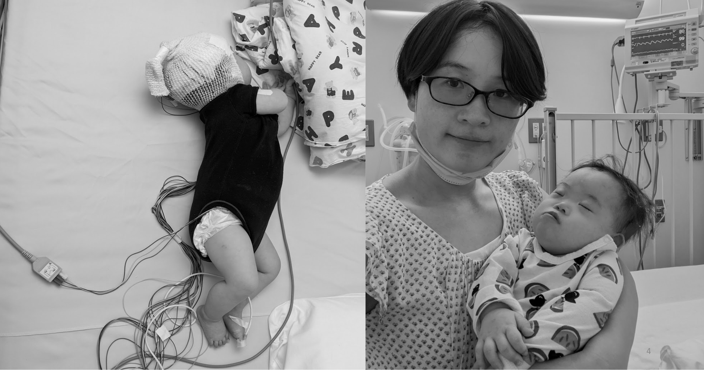

My child was born with Down syndrome.
The first time I held her, her tiny hand gripped my finger. In that moment, I made a promise to do everything I could for this child. Every time I saw her smile, I felt an overwhelming desire to help her reach her full potential.

But the reality was harder than I ever imagined.
My child's growth is slow. There were nights when I couldn't help comparing her to other children, crushed by anxiety and impatience. "Where is she right now in her development?" "Where is she heading?" "What can I do for her today?"—I carried these unanswered questions with me constantly.
I wanted to consult with her therapists, but I couldn't convey her daily progress well. At the hospital, I repeated the same explanations every time. Family and caregivers were disconnected—no one saw the whole picture. I wanted to celebrate her small victories with someone, but that "someone" wasn't there. I felt so alone.
Specialists came in with preconceptions based on limited samples, already convinced that "this child can't do this." At home, I watched her small changes every day. She had grown so much in six months—yet standardized assessment tools said "no progress." The child I saw at home and the child in those evaluations felt like two different people. I desperately wanted to share what I observed at home.
One day, I visited a special needs school. What I saw there cut deep into my heart. After graduation, the options were predetermined jobs and minimal wages. That was presented as "reality." Nothing had even started yet—was my child's future already decided? I couldn't stop the tears.